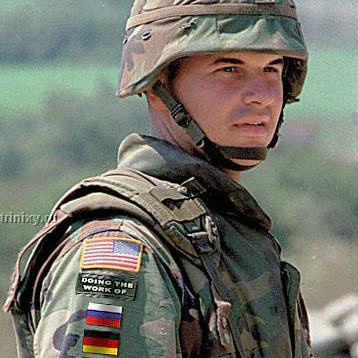

-
Catalan Flag
This image, originally disseminated via Twitter, shows a scene from the Catalan independence referendum protests in 2017. The image is indeed taken from these protests however the Catalan flag is a subsequent addition.
-

US soldier
Below the US flag on the soldier's shoulder, the patch "DOING THE WORK OF" plus a Russian, German and French flag has been added to the image.
More -
Pirate skull
This forgery, submitted to the Worth1000 contest, displays the supposed skull of a pirate with one eye and one remaining tooth.
More -
9/11 tourist
A famous forgery of a tourist getting photographed on the world trade center terrace at the moment of the 9/11 attack.
More -
Back to the future
"Today is the day Marty McFly..." versions of this hoax have repeatedly circulated the Web. The actual date is October 21, 2015.
More -
Ferguson protest
This forgery, attempting to discredit the protests surrounding the shooting of Michael Brown shows a placard supposedly defending the right to robbery.
More -
Double sunset on Mars
This image displays a double sunset and was supposedly captured on the surface of Mars. The suns actually originate from the original Star Wars movie "A New Hope".
More -
-
Sarah Palin faceswap
A typical case of faceswap, intended to discredit then vice presidential candidate Sarah Palin.
More -
Black lives matter
A banner, supposedly critical of the "Black Lives Matter" slogan, is a proven forgery of an actual "Black Lives Matter" protest
More -
-
-
-

Copy-moved gull
This is a forgery provided to us by Anastasia Katsaounidou (akatsaounidou [at] gmail dot com).
-